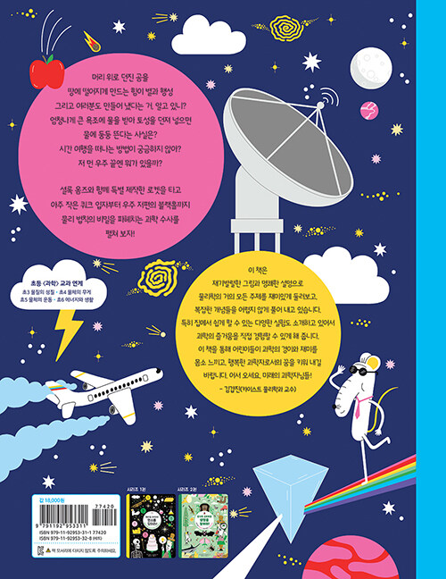
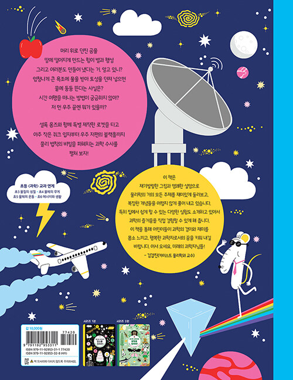

2024.05.22. 출간 / 65쪽 / 230*295mm / 양장 / 어린이 과학(물리학)
과학 탐정 셜록 옴즈와 함께 펼치는 과학 수사
이번엔 물리학이다!
《우리 집 구석구석 원소를 찾아라!》로 화학을, 《알수록 신비로운 생명을 찾아라!》로 생물학을 파헤친 과학 탐정 셜록 옴즈가 우주 만물의 원리를 탐구하는 경이로운 학문, 물리학으로 돌아왔다! 책은 어린이의 눈높이에 맞추어 운동과 에너지, 물질과 물체 등 물리학의 주요 개념을 친절히 안내하고, 각 분야에서 무엇을 연구하는지 살핀다. 자칫 딱딱하게 느껴질 수 있는 물리 법칙과 지식 역시 일상에서 마주할 만한 예시를 들어 쉽고 재미있게 풀이했다. 물리학의 발전 과정과 물리학자들의 놀라운 업적을 들여다보는 여덟 편의 ‘만화로 보는 물리학의 역사―발견의 순간’과 집에서 직접 해 볼 수 있는 다양한 실험을 소개하는 부분은 책의 또 다른 매력!
“이 책은 어린이의 손을 잡고 물리학을 탐험하는 훌륭한 안내서입니다. 재기 발랄한 그림과 명쾌한 설명으로 물리학의 거의 모든 주제를 재미있게 둘러보고, 복잡한 개념들을 어렵지 않게 풀어 내어 어린이가 과학의 매력에 빠져드는 첫걸음으로 알맞습니다. 이 책을 통해 어린이들이 과학의 경이와 재미를 몸소 느끼고, 행복한 과학자로서의 꿈을 키워 내길 바랍니다. 어서 오세요, 미래의 과학자님들!” _감수자 김갑진(카이스트 물리학과 교수)